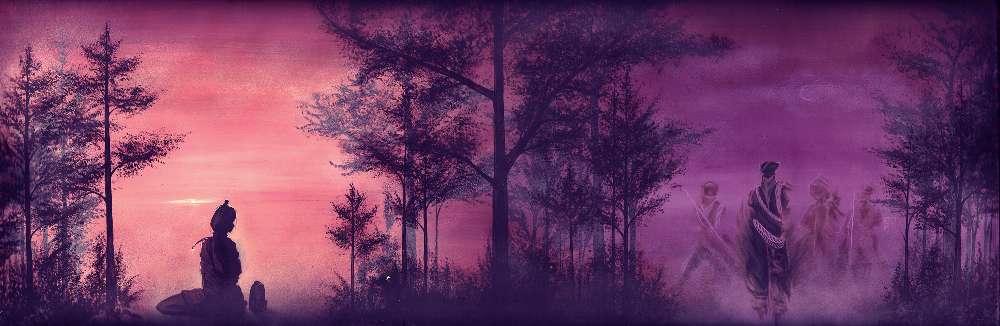
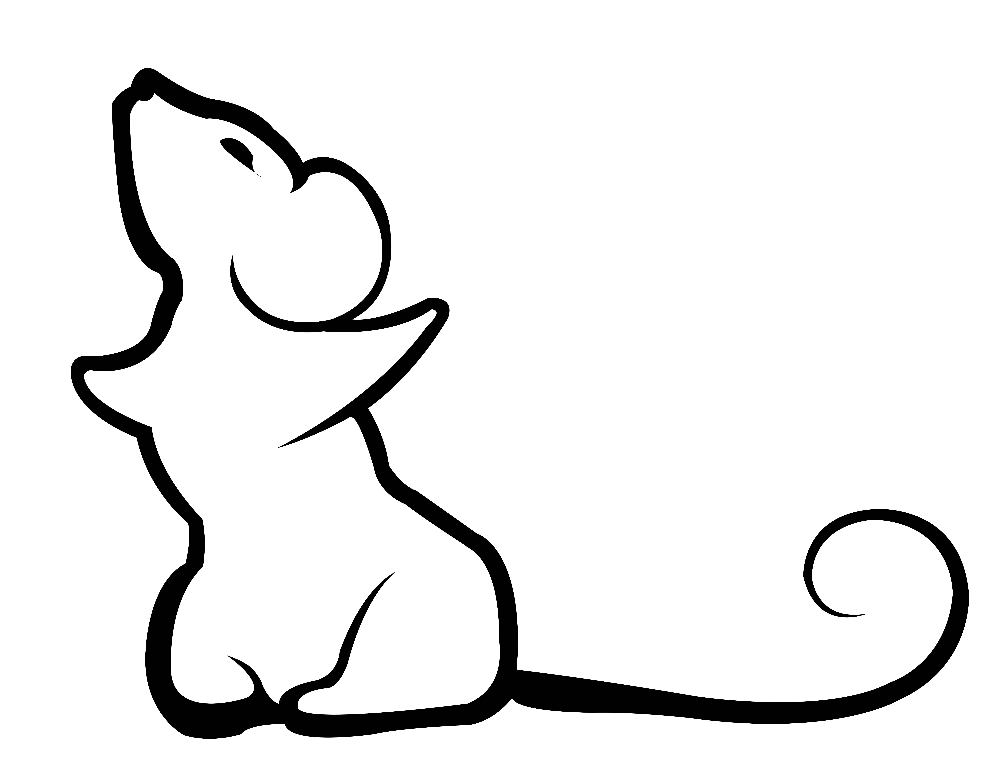
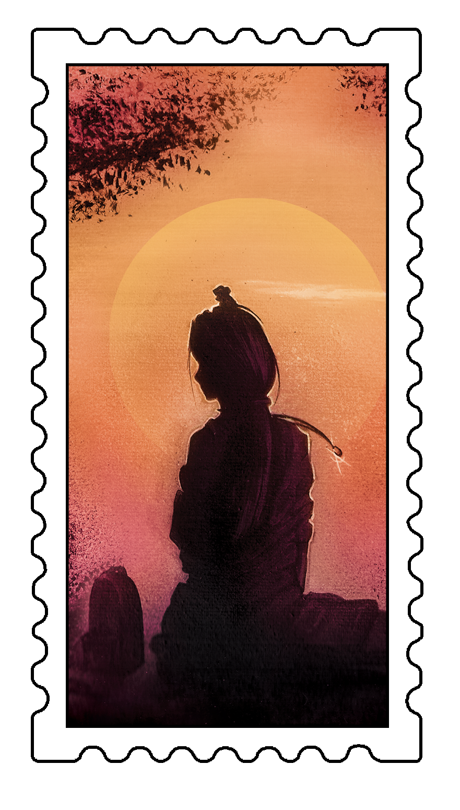
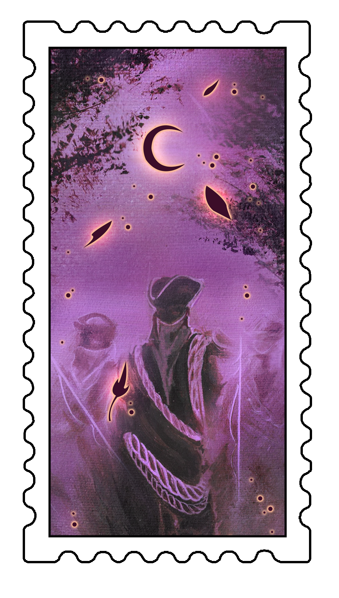
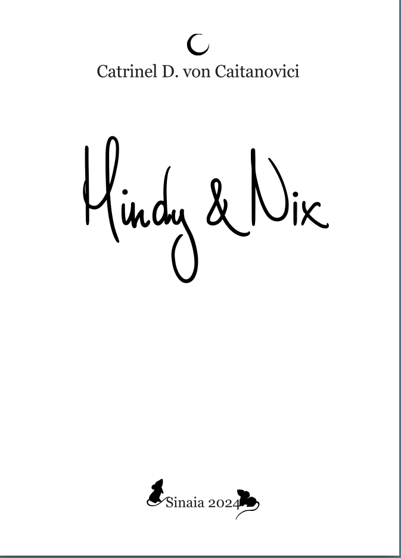
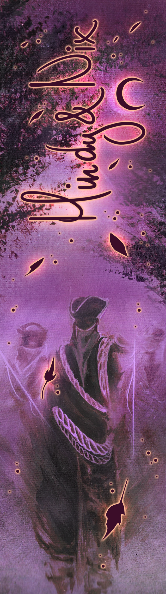

O vrăjitoare pe cale de dispariție.
O șoricică loială.
O insulă uitată de lume.
Mindy poate să ia orice formă de animal. De șase luni lucrează la grădina zoologică, unde vorbește cu șerpii, perie tigrii și schimbă dieta șoriceilor. Dar colegii încep să o suspecteze, așa că fuge — cu Nix, o șoricică mică și curajoasă, ascunsă într-o borsetă.
Își iau bilet doar dus, spre o destinație necunoscută. Dar un sunet ciudat oprește lumea în loc: oamenii uită cine sunt, avioanele stau pe pistă, aeroportul devine un labirint fantomă. Și Mindy ajunge pe o insulă care nu există pe nicio hartă.
Acolo, într-un oraș cu canale secate și corăbii suspendate pe stânci, trăiesc ființe blestemate: barcangii care și-au uitat forma, himere care se tem de uitare, și un templu scufundat unde se ascunde un secret mai vechi decât lumea.
Mindy și Nix trebuie să găsească drumul înapoi — dar poate că adevărata călătorie nu e spre casă, ci spre memoria pierdută a tuturor.
O poveste despre memorie, natură și echilibrul fragil dintre oameni și animale.
Desene realizate manual de autoare, Catrinel D. von Caitanovici

Descarcă PDF-ul integral, cu ilustrațiile originale ale autoarei, și citește povestea completă oriunde, pe orice dispozitiv. Fără costuri, fără cont.
⬇️ Descarcă PDF-ulVrăjitoare, specie pe cale de dispariție. Dacă ne iau la circ, așa ne vor scrie numele pe afiș. Unde altundeva să ne mai primească după ce am fugit împreună de la grădina zoologică? Impulsivă decizie, recunosc, dar n-am avut de ales. Nu puteam rămâne acolo.
Descarcă PDF-ul integral, abonează-te pe YouTube și susține povestea pe Patreon.